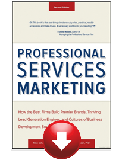

Articles
Paige Arnof-Fenn, The founder of Mavens & Moguls, is a popular columnist whose articles are syndicated around the world
Click below to read some of her favorites:
Monthly column with Forbes "The Entrepreneur's Playbook"
De-Clutter, Detox & De-dupe: a recipe for success in the new yeart
You do not have to be a pack rat or hoarder to want to get more organized this year. Whether you have stacks of paper on your desk or piles of unread e-mails clogging your inbox, you know you will feel better if you could just get them sorted out and organized.
Read article »
Sharpen Your Marketing By Measuring What Matters Most
Something I always tell my clients is to measure what matters most because you will get what you measure, that’s for sure. Make certain you are rewarding the right customers and employees for the right behavior...
Read article »
Lagniappe: How To Win Your Customers' Loyalty With A Little Extra
I grew up in Louisiana and there are millions of cool things about having lived there, but one of my favorite terms is the title of this month’s column, lagniappe (Lann Yapp). For those of you unfamiliar with this word, it means something extra, like a baker’s dozen or a gift with purchase. It is very much part of the culture at home and I just love that way of life...
Read article »
Back-To-School Season For Your Reputation
Living in Boston, which is the ultimate college town with 250,000 students flocking to the city each September, you really feel like the start of the academic year is a fresh start in business too...
Read article »
Beware of Business Bullies
At the Sports Museum at Boston’s TD Garden, where I serve as chair of the board of trustees, we’ve launched an initiative called Boston vs. Bullies to help at risk youth learn ways to combat bullying using lessons from sports.
Read article »
Madonna, Gaga & Growth
I started my company more than 10 years ago and like any business that has survived for more than a decade, you have to keep reinventing yourself and add new tools to the toolkit if you want to stay relevant and thrive. …
Read article »
100 Founders Share Their Top "Aha" Moments for Forbes
I did not take more than a long weekend off for 4 years, afraid my hard work would disappear...
Read article »
CEO advice reaches all the way to New Zealand
Paige explained how she used a listening tour to grow her PR business when the global financial crisis hit a few years ago...
Read article »
Telling Your Story: The Secrets To Content Branding
Leading into the holidays families get together often and I recently spent time with my nieces and nephews and they begged me to tell them stories several times a day. It got me thinking, people of all ages are naturally interested when you engage them with an entertaining story...
Read article »
Life Lessons from the Incomparable B.B. King
As many of you know I grew up in New Orleans and one of my favorite things every spring as a kid was going to the Jazz & Heritage Festival. When i was young this was basically a local event celebrating the city's jazz, zydeco and blues music...
Read article »
Building a platform for your business
A maven, according to The Joys of Yiddish, is “an expert; a really knowledgeable person; a good judge of quality; a connoisseur.” A mogul is a very rich or powerful person, so it struck me that the name of this web site was a fantastic start to building a platform.
Read article »
Experts weigh in about being an entrepreneur
n professional services like marketing consulting, our story is our clients’ story, our success is their success. Our goal is not to win awards and accolades for our work, we are happy when we build our clients’ business so that they see marketing as an investment in their brand not an expense.
Read article »
Clients Don't Care How Much You Know Until they Know How Much You Care
We’ve got 75 entrepreneurs in the house, discussing all the different hats they wear, the creative energy that comes with the role, and how every day is a new adventure...
Read article »
Interview with Mavens & Moguls CEO
Paige Arnof-Fenn: Mavens & Moguls Tackling Marketing Problems
Read interview »
Expert advice on how to grow your business
Quick Tips from Local Biz Experts...
Read article »
CEO gives advice to Harvard graduates
It really is a marathon not a sprint so do not set arbitrary goals like being named 30 under 30 or 40 under 40 because it may take you longer than Mark Zuckerberg to hit your stride and that's ok...
Read article »
Online Entrepreneurs On The Best Advice Ever Receive
I asked lots of successful online entrepreneurs what was the best piece of advice they have ever received. I got a massive response and the cream of the crop is here for you...
Read article »
The 8 Biggest Social Media Mistakes Brands Make (And How They Can Ruin Your Reputation)
...another part of maintaining a professional tone is staying on message in your interactions. “Do not clutter your followers’ feeds with what you ate for lunch or your coffee habits,”
Read article »
CEOs share how dads fostered their entrepreneurial spirit
Growing up, both of my parents have been such wonderful influences in my life. My father definitely had an entrepreneurial spirit and I watched him foster ideas, create inventions and tinker with electronics and prototypes...
Read article »
Mavens & Moguls interviewed by Visa on Secrets of Small Business Success
Be Aware of Changing Economic Tides. When the recession began in late 2008, Paige Arnof-Fenn, the CEO of the strategic marketing consulting firm, Mavens & Moguls, went on what she calls a “listening tour” among her customers and prospects...
Read article »
Experts Weigh In: End of the Year Business Tips
“At year end, I always check in with everyone who was interested to hire us during the year but didn’t. Many times companies find “use it or lose it funds” on the books at the end of the year and if you hit the timing right..."
Read article »
Traits of Highly Successful Business Ownerss
I started my company 14 years ago and I think the most common trait among successful business owners is… Perseverance.
Read article »
Creative Ways to Market Your Business That Work
Giving talks at conferences: "I started my firm 12 years ago and have gotten dozens of clients over the years by giving talks at conferences, trade shows, industry events, universities and others. I have also written articles for online publications, mainstream media and blogs."
Read article (slide 7)»
CEO gives advice to MBAs
Last spring, in preparation for the 50th anniversary of women being admitted to the School's full-time MBA Program, we invited the HBS alumni community to identify alumnae who stood out as leaders, mentors, and role models...
Read article »
CEO quoted in Harvard Business School magazine
Question: What career advice do you have for today's female MBAs?
"Always be the most well-prepared person in the room. You will never regret it, and you'll build a strong reputation."
Question: Whom do you admire in the business world?
"Richard Branson, for turning his learning disability to his advantage; also, for his courage, creativity, and enthusiasm for the great brand he built."
Read more »
CEO quoted in business blog
'"Facts are boring,” says Paige Arnof-Fenn of Forbes.com, “but putting facts into a context with emotion makes them memorable. Stories help you connect with people on a sensory level.”
Read article »
Marketing advice in 50 words or less
'Great marketing is about motivating your customers to buy more of your products and services it is not about winning awards or creating buzz or attracting more eyeballs or clicks unless they are buying too...
Read article »
New year, New Attitude
As the calendar changes soon to 2013 we have an opportunity to start anew. That is one of the exciting things about a clean calendar, it is a blank slate to start the year fresh with a renewed sense of purpose and optimism...
Read article »
When in Doubt, Give
With the holidays approaching, the season of giving is upon us. The old saying that "the more you give, the more you get" has certainly been true in my experience. I grew up in a family of business people who valued volunteerism and being involved with the communities in which we live and work.
Read article »
CEO weighs in on the future of marketing
Simplicity & Calmness, Buyers in Control & Complicated Channels
The roles & responsibilities of marketing are in transition and will certainly be very different still down the road. Here are a few observations & predictions I have...
Read article »
Naming advice from CEO
First of all you have to set your naming criteria and decide what is important to you. Do you want a short name (max of 8 characters for example)? Real word or made up word?...
Read article »
Leadership Lessons On & Off The Court
I’ve been a sports fan since I was a kid, and living in Boston now has made it fun and easy for me to continue following teams I love…
Read article »
A Tale of Two Great Championship Cities
I grew up in New Orleans and have lived in Cambridge, MA since 1999. You might not think Louisiana and Massachusetts have a lot in common - one is hot and humid known for its food, music, parties and hurricane season and the other has four distinct seasons, known for its foliage, Nor'easters and world famous universities...
Read article »
Mavens & Moguls featured in "This week in small business" in New York Times
A weekly roundup of small-business developments.
Read article »
Lessons In Leadership, Resilience & Innovation
As an entrepreneur and business owner I see examples of innovation everywhere, I think it is part of the entrepreneurial DNA…
Read article »
Risk, Reward & Resilience
I am a long time fan of late night television and wanted to get David Letterman as our graduation speaker…
Read article »
Yahoo article on Becoming a Lovable Business
Every month is a good time to celebrate love so why not reflect on what you love about your business now? Ask yourself, are you doing work you enjoy most of the time? What parts of your job energize and motivate you?
Read article »
Yahoo article on time management called Time Marches On
The days are getting longer, we change the clocks again soon! As much as we hate to lose an hour's sleep the payoff is well worth it with more daylight to enjoy. Business tradeoffs happen regularly too with one step back then 2 steps forward.
Read article »
Yahoo Article on Networking While You Eat
At a late morning meeting recently with a fellow entrepreneur, as we were wrapping up I mentioned my next meeting had been postponed and asked if he had time to grab a bite to eat.
Read article »
If I knew then what I know now
I wish I had realized that my definition of success would change over time so that I would not have gotten so hung up on things that really did not matter...
Read article »
If I knew then what I know now - part 2
If you could go back and change anything about the way your business got its start, would you do it? It’s totally okay to admit you would...
Read article »
When it is time to fire a client
We often say that PR is all about relationships. While most often in reference to media relationships, as a service-based business the relationship between publicist and client is perhaps the most important one of all.
Read article »
Leading Latin Marketing & Media site quotes CEO on content branding
Highlight the stories that captivate your customers. Facts are boring but putting facts into a context with emotion makes them memorable.
Read article »
Connect In Meaningful Ways
I have a confession to make. I am not on Facebook, I do not Tweet and I still consider myself a marketing expert…
Read article »
CEO interview on leading branding web site
Paige talks with Anaezi Modu for the REBRAND Expert Interviews Series.
Read her thoughts and tips below and get her sound advice for small and large businesses at Forbes Magazine...
Read article »
CEO offers career advice & career tips to leading site
I would tell people that jobs and job leads can come from anyone anywhere anytime so you should always be on your best behavior & make a great lasting impression...
Read article »
Personal branding tips
According to Paige Arnof-Fenn, Founder & CEO of Cambridge-based global marketing firm, Mavens & Moguls, lots of people think you have to be famous to have a personal brand...
Read article »
CEO BLOGS FOR THE UnConference at MassTLC:
Creating Effective Value Propositions
For the second block I chose Jack Derby’s session on creating value propositions. Jack is a sales legend and teaches this stuff at MIT and Tufts so I knew I would learn a lot listening to him....
Read article »Brains & Bliss: How to Build Happier and More Productive Teams
My morning started with a session on happiness and gratitude. What a great way to start the day! Jo began his career in VC in the late 90s and Anne spent 15 years in venture as well. She decided to step off the treadmill that had become her life and went to meet with an executive coach to figure out her next move. What she realized is she wanted to be the coach, that is the job she was most excited by....
Read article »unConference Session: Michael Skok on Start Up Secrets, Building a Compelling Value Proposition
After years of hearing great things about the unConference, I finally attended my first one on Friday November 16 at the Hynes Convention Center and it was fantastic! As good as I had heard it was, I found it to be even better in reality...
Read article »
Feeling lucky?
For entrepreneurs, luck is a lot like snowflakes – no two instances of it are alike. Today, we’ve got a panel of small business owners on our blog who have experienced some seriously serendipitous moments with their companies...
Read article »
CEO business tips
Paige Arnof-Fenn is the founder and CEO of Mavens & Moguls, a global marketing strategy consulting firm whose clients range from early stage start-up to Fortune 500 companies including Colgate, Virgin and The New York Times Company.
Read article »
Think Before You Leap: Seven questions to ask before making a big decision
"[One of] the main things I think about is will it matter six months down the road,” says Arnof-Fenn. Thinking in terms of a finite time horizon often provides better insight to the right solution.... "
Read article »
CEO shares family recipe
There’s that old saying: When life hands you lemons, make lemonade.
But what about when life hands you repeated snowstorms? Get Cooking...
Read article »
Poetry contest selection
What I love about Cambridge
Read poem »
Monthly column with Entrepreneur
Business Advice From A Southern Entrepreneur
These down-home expressions have plenty of advice to offer new business owners. See what you can learn from these nine sayings.
Read article »
Why You Should Mind Your Manners
These eight tips prove that courtesy does count for small businesses.
Read article »
Encouraging Positive Change
Want to make this the best year ever? It's time to make some changes that'll set you up for success.
Read article »
A Recipe For Productivity
Are business board meetings getting stale? A company retreat may be the answer to pump up your team and get the creative juices flowing.
Read article »
Freshen Up Your Website
Less isn't always more. An oversimplified website may be driving away business.
Read article»
Making The Most Of What You Have
Sometimes, seeing the silver lining is all you need to keep your business burning bright. If you believe the saying that what doesn't kill you makes you stronger, then the people in New Orleans have got to be among the strongest people in the world. I went back home several times in the past year and each trip brought a new level of appreciation and gratitude for what my friends and family have been dealing with for the past few years...
Read article »
Action Through Inaction
Incorporate the lessons of Tai Chi and Qigong into your daily life as an entrepreneur...
Read article »
Give Yourself The Gift Of Time
Spending time reflecting away from work can help you find clarity on your business and life. Read article »
Body Language Speaks Louder Than Words
Hire smart by looking past what references say about former employees and finding out what they mean. Nonverbal cues can often tell you more about a person than what that person spells out in an e-mail or conversation. One area where this comes up for many entrepreneurs is in hiring. When you ask most CEOs or business owners what keeps them up at night, it's either that they don't have enough good employees to grow or the ones they have are driving them crazy...
Read article »
Business Lessons From Mom
You never thought you'd admit it, but Mom was right. So sit up and pay attention to how her lessons growing up will help you become a successful entrepreneur today.
Read article»
Business Lessons From Dad
7 things my dad always did that helped me succeed in business today.
Read article »
Leaving A Legacy
Do you know what sort of impact you want to make on the world and how your business and your life factor into that.
Read article »
Creating A Brand
Whether you're selling your expertise or the face behind a product, your image directly affects your customers. Here's how to create a brand when the brand is you.
Read article »
Failing Your Way To Success
Don't let a failed startup kill your entrepreneurial dreams. Get back in the saddle again with these encouraging words of wisdom.
Read article »
Take Time Off From Your Startup
Planning--and taking--a well-deserved vacation the right way can refresh your spirits and your business.
Read article »
Gauging The Success Of Your Business
Building a business based on what you value most--not what you earn--will guarantee its success and your happiness.
Read article »
The ABCs Of Entrepreneurship
Whether you're just starting out or struggling through a rut, relearning your ABCs may be just the attitude adjustment you need to take your business to the next level.
Read article»
Is Business Just A Dating Game?
Apply the rules of romance to your business relationships and win your clients' hearts.
Read article »
The Ins And Outs Of Building Trust, Believing In Others And Spotting The Marks Of A Disingenuous Dealer.
Read article »
Your Pay Check
How do you know when--and how much--to pay yourself?
Read article »
A Fight Or Flight Reaction
Frivolous litigation is a fear that strikes the heart of every business owner. Here's what you can do about it...
Read article »
Attracting Success In The New Year
Letting go is a resolution that will save you time, money and heartache in the long run...
Read article »
Organizing Your Home Office
Make a resolution to get organized--and stay that way--the entire year with these four tips.
Read article »
Spice Up Your Summer Schedule
Is summer your slow season? It doesn’t have to be.
Read article »
Take A Break While The Weather’s Still Good
Recharge your batteries, connect with your team in a new way, and have some fun while the summer sun lasts.
Read article »
The Cost Of Customer Loyalty
When my favorite local coffee shop made a few too many changes, it forced customers away. How can you avoid this same mistake?
Read article »
Make Every Meeting Count
Sharpen your presentation skills with these simple steps to make the most of your meetings.
Read article »
How Do You Stay Connected?
This month I talk about celebrating my 20-year college reunion. I love any kind of reunion. They're great opportunities to reconnect with old friends and meet new ones with whom you share some common history. Gatherings like these allow you to rejuvenate, relax and remember people, places and things you enjoyed in the past and can still relate to today. Read more...
Read article »
How To Keep A Tight Ship When Life's Inevitable Storms Arise
There's a lot of press today about people in their prime career years being the sandwich generation--caught between aging parents and growing families. I'm here to tell you that there can be open-faced sandwiches (no kids), as well as club sandwiches, with businesses layered in between family obligations. These can lead to high pressure situations for even the most prepared and organized entrepreneurs...
Read article »
Manage Your Time And Business
You still hear a lot about sharing best practices across categories and industries. There are consultants and firms that have built entire businesses in this area. For example, I often see aspects of a technology firm that apply to a consumer products company or a nonprofit, despite their seeming differences...
Read article »
Plan Ahead For Low-Stress Holidays
Start thinking about the holidays long before they hit so you’ll be cool and collected come December.
Read article »
Getting Outside Help
It can be lonely at the top. Get help for your toughest business decisions by joining other fellow business owners.
Read article »
Is It The Right Time To Launch Your Business?
This successful entrepreneur points out five signs that will help you determine if it's now or never for your big business idea.
Read article »
New Year, New Resolutions
Get the update on the writer’s resolution to get organized, plus tips on making your promises a success.
Read article »
The Partner Track
How to decide if you should fly solo or not: the second in a two-part series on business partnerships.
Read article »
Should You Partner Up When It Comes to Business?
7 questions to ask yourself when considering a partnership.
Read article »
What To Do--And Not Do--As A Startup
These seven lessons will help keep you on track during the early stages of your business.
Read article »
Make Business Travel More Comfortable
Avoid upsetting flight delays and lost luggage with these 6 tips for business travelers.
Read article »
Launch and Grow Your Small Business Now."
Read article »
Listening Tour for business success
Read article »
Smart Women Interviews: Paige Arnof-Fenn
Read interview with Mavens & Moguls CEO here
Read article »
CEO chairs jury for global Rebrand competition
Paige talks with Anaezi Modu for the REBRAND Expert Interviews Series.
Read her thoughts and tips below and get her sound advice for small and large businesses at Forbes Magazine.
Read article »
BEST PRACTICE IDEAS FOR RUNNING A SMALL VIRTUAL BUSINESSES
Paige sees herself as a brand strategist who loves building strong brands and great teams, she also happens to have a terrific rolodex and stellar reputation so she can pick up the phone or connect with just about anyone based on the strength of her relationships.
Read article »
Marketing, Social Media and Demand Generation interview
I started getting lots of requests for help right after 9/11 when marketing was the first thing to get cut across the board. I had more work and clients than I could service by myself so I started calling the best people I worked with in my career. I jokingly referred to the women as the Marketing Mavens and the guys as the Marketing Moguls and for short I called them Mavens & Moguls...
Read article »
How women can build great businesses and happier lives
As a marketer, Paige understands that value of information but also tries to reconcile that with her desire for privacy (remember that concept – ha!). She employs a bit of what Selia Yang described as the No-Yes by looking for ways to give useful information without compromising too much...
Read article »
A day in the life of a great networker
It was at the December meeting of an organization for women entrepreneurs and business leaders that Paige Arnof-Fenn learned her marketing strategy company had won a lucrative contract.
Read article »
How to be productive & happy
I started a global marketing firm 13 years ago and my best tip on being productive is to first & foremost be happy. Here is my advice to get started...
Read article »
Weed out the tire kickers
Paige Arnof-Fenn got a crash course in weeding out tire kickers when she founded Mavens & Moguls and sometimes found herself spending 15 or 20 hours preparing a pitch for a prospective client and answering elaborate follow-up questions. “At the end they would say, `Thanks so much. You’ve really educated me. I think we’re going to use the agency we’ve always used.’...
Read article »
B2B MARKETING: HOW TO INCREASE YOUR CUSTOMER BASE AND GENERATE SALES
In order to successfully develop a marketing plan to reach new customers, you need to better understand what the needs are of those potential customers.
Read article »
Fast Growing Marketing Company Hype Initiatives Delivers Big Results to Clients
The demand for outsourced direct marketing and sales are increasing. Hype Initiatives have exceeded sales targets by 8% and improved retention rates by 16% since their establishment in Australia.
Read article »
CEO gives advice in Chicago Tribune
Crowdsourcing taps the wisdom of the community for the answers you need...
Read article »
Ways tot help your business thrive
Have you been trying to find ways to transform your business? If your thinking tape has run dry and you think you have used every idea out there to help your business grow read this article it is all about helping business work through the hard times.
Read article »
HOW TO INCORPORATE PERSONAL BRANDING INTO YOUR STYLE
Not sure what you’re selling? It’s yourself. You don’t have to be Oprah or Rachel Zoe to think of yourself in this way.
Read article »
DEPENDABLE SALES FIRM EXECUTIVE TOUCH LTD CREDITED FOR EXCEPTIONAL ROI
In order to successfully develop a marketing plan to reach new customers, you need to better understand what the needs are of those potential customers.
Read article »
How to get more customers
By now, small business owners should have new strategies in place to find new customers and thereby increase their sales. If only we were living in a picture perfect world, where we would have an unlimited budget, every lending institution would give us loans, luck would favor us and our touch would turn everything into gold.
Read article »
Advice for business students
My advice is not to just take business classes, explore other areas of interest while you are in school. Study what you are passionate about. Steve Jobs studied calligraphy, which ultimately made him a better businessman. So follow your heart, which will make you more successful down the road.
How to find new customers and increase sales
Use the information about your existing customers to develop a target audience for your business in its drive to win new customers and increase sales.
Read article »
Tips for naming
Your company or product name should also correlate to the price points you’re aiming at...
Read article »
When to fire a client
We often say that PR is all about relationships. While most often in reference to media relationships, as a service-based business the relationship between publicist and client is perhaps the most important one of all...
Read article »
Beware of brand confusion
The publishing industry—particularly on the b-to-b side—is filled with confusingly similar brand names. ..
Read article »
Targeting your marketing
By whatever definition, marketing consists of activities designed to get a product or service from the producer to a consumer. Hand copied flyers delivered door to door, simple giveaways at trade shows or business expos, a basic radio spot, a Facebook page, or a sophisticated and expensive web design with the use of multiple media…it’s all marketing...
Read article »
Questions to ask before making a big decision
When making a big decision, thinking beyond the “right here, right now” is a vital first step toward avoiding a big stumble.
Read article »
Hard-earned lessons learned
Favorite inspirational quotes:
"The harder I work, the luckier I get." (My grandfather had this quote on his desk)...
Read article »
Signs your business is succeeding
"Going on vacation and earning money at the same time means you have built a company, not just a job."
...
Read article »
Personal Branding: The Secret to Building a Sustainable Business
It’s tough to stand out in this competitive market for investment management services, products, and job
openings.
Read article »
When to rebrand your company
When rebranding, you don't want to lose your loyal customers. "Reach out to current customers separately; they are your first priority.
Read article »
Going Global
I got my first passport at age 16 to go to France as an exchange student and it was a pivotal moment in my life. It opened my eyes to a whole new world both figuratively and literally and from that moment on I knew that overseas travel would be part of my life forever.
Read article »
CEO Blog Nation
I jokingly referred to the women in my group as the “Marketing Mavens” and the guys as “Marketing Moguls’ and my nickname was “Mavens & Moguls” and it stuck.
Read article »
CEO interview with CMO magazine on future role of CMOs
Slide Show: The CMO's World In 2020
View Slideshow »
Inspirational quote on leading women's web site by CEO
Listen to audio »
Secrets to a long marriage
Read Article »
Cover 2 Cover Magazine Articles
Are you passionately curious?
Read article »
To your health!
Read article »
Main Street to Capitol Hill, Are you listening?
Read article »
Religious Truisms
Read article »
The Power of Positive Thinking
Read article »
Enrich your life through travel
Read article »
Grace Under Pressure
Read article »
Continuing Education
Read article »
Timeless advice, always is style
Read article »
Play it again Sam
Read article »
Think about what you truly cherish
Read article »
E-book: The One Piece of Advice You Can't Sell Without
Paige contributed to an e-book about the best sales advice with chapters from other thought leaders including Seth Godin, Alan Weiss, Jill Konrath, Paul Dunay and Keith Ferrazzi.
Download e-book »
Text Book: Entrepreneurship Strategy
Paige also wrote the foreword to a textbook on Entrepreneurial Marketing being used at leading business schools.
Read the foreword »
Purchase book »
 CEO featured in book by JJ Ramberg of MSNBC
CEO featured in book by JJ Ramberg of MSNBC
As the host of MSNBC’s “Your Business” and a seasoned entrepreneur, JJ Ramberg provides the tools to lift your business to the next level in “It’s Your Business.”
Read an excerpt »
 CEO contributes chapter to #1 Amazon Bestseller and only female authored book in the top 25 books in business on How-to information, inspiration and empowerment for your life and career from six and seven figure women from all over the world!
CEO contributes chapter to #1 Amazon Bestseller and only female authored book in the top 25 books in business on How-to information, inspiration and empowerment for your life and career from six and seven figure women from all over the world!
Learn more »
CEO contributes 2 chapters in legacy book
This Legacy book contains 65 heart-warming stories and sayings
from over 45 people -- authors; speakers; professional athletes; a 4-time Olympic medalist; a Retired US Marine (43 years of service) who received the Medal of Honor and 4 Purple hearts -- the list goes on and on!
Learn more »
 Mavens & Moguls featured in book on Likeable Businesses
Mavens & Moguls featured in book on Likeable Businesses
Likeable Business’ Offers Keys to Staying Alive in the Social Age
Learn more »
CEO contributes to book that hits #1 in Canada and #2 in the USA!!
FINDING FULFILLMENT IN THE SPIRITUAL AGE is a compilation of tips, advice, inspiration, and stories from women who are teaching others through their past awakenings how to live in this new age (the Spiritual Age).
Learn more »
 CEO asked to write the chapter on personal branding for career advice book
CEO asked to write the chapter on personal branding for career advice book
In such a challenging workforce climate, “career enhancement” means many different things: procuring that first job, keeping an existing position, returning to the workforce after a long hiatus, riding the waves of unemployment, starting an entrepreneurial venture...
Learn more »
 CEO contributes chapter to PR Measurement Guidebook by PR Press
CEO contributes chapter to PR Measurement Guidebook by PR Press
Learn more »
 CEO contributes chapter on Million Dollar PR Advice
CEO contributes chapter on Million Dollar PR Advice
Learn more »
The Naked Truth: A Working Woman's Manifesto on Business and What Really Matters
Learn more »
Mavens & Moguls receives 2013 Massachusetts Excellence Award
September 16th 2013 - Mavens & Moguls has been selected for the 2013 Massachusetts Excellence Award amongst all its peers and competitors by the Small Business Institute for Excellence in Commerce (SBIEC).
Mavens & Moguls CEO received 2010 Ascendancy Award Winner for Women's Leadership
Mavens & Moguls CEO honored in 2003 as one of 30 "Extraordinary Bostonians" for her ideas, actions, values and outstanding contributions to the city. Boston Event Guide featured her as one of the "exceptional people who has performed outstanding leadership in a professional, social or volunteer role, inspired one or many through donating time, money and a good heart, and had a breakthrough idea or value that has brought people together."
Failure: Key To Success by E.I. Hunter
Failure hits you once again, what are you going to do? Run away, hide in your room, and never again put yourself out there because you simply can’t go on feeling like a total loser - rejected, embarrassed, and humiliated. For sure, if anyone else knew you failed, people will think less of you and or worse yet, give you a piece of their mind, “You aren’t going anywhere with your business idea; Go get a job and live your passion as a hobby; Your goals aren’t realistic; You’ve been working on your dreams for years… don’t you think it’s time you call it quits?” Maybe IT’S YOU who put your real dreams on hold because LIFE KICKED IN. Forget your dreams – you’re wasting your life away just trying to deal with the realities surrounding you.
You are about to read real stories of 18 individuals who continue to win in life because they didn’t allow failure to keep them captive in their rooms. They are proud, bold, and living their dreams full-on. If you feel life has gotten you down; that your past stops you from moving forward; that you are nowhere close to living the life you envisioned, sit-down, relax, grab a hot soothing drink, and read this book. Whoever told you that the road to success feels good was lying to you. Can you handle being rejected; told-no; embarrassed; and looked down upon? Are you willing to embrace failure EVERYDAY of your life in order to succeed? Learn how to say YES to your dreams in the midst of unpleasant feelings and emotions that make you want to hide from the world, and get ready to be taken on a journey where your own success depends on your willingness to fail.
Contact Mavens & Moguls for practical advice from real world experience.